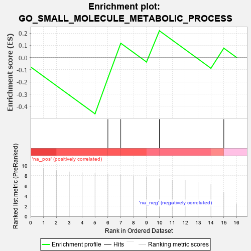
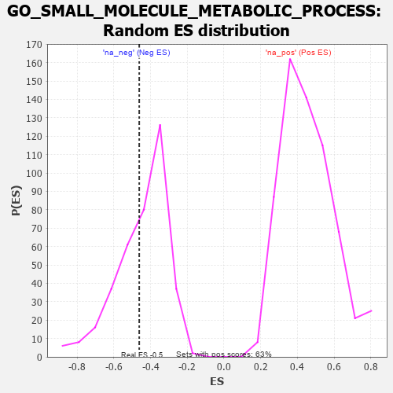

| | | Dataset | pop1_8226S_ATO_G |
| Phenotype | NoPhenotypeAvailable |
| Upregulated in class | na_neg |
| GeneSet | GO_SMALL_MOLECULE_METABOLIC_PROCESS |
| Enrichment Score (ES) | -0.4615385 |
| Normalized Enrichment Score (NES) | -1.0297999 |
| Nominal p-value | 0.36729223 |
| FDR q-value | 0.38987625 |
| FWER p-Value | 0.8 |
Table: GSEA Results Summary

Fig 1: Enrichment plot: GO_SMALL_MOLECULE_METABOLIC_PROCESS
Profile of the Running ES Score & Positions of GeneSet Members on the Rank Ordered List
| PROBE | GENE SYMBOL | GENE_TITLE | RANK IN GENE LIST | RANK METRIC SCORE | RUNNING ES | CORE ENRICHMENT | | 1 | PDE4A | | | 6 | 8.355 | -0.1688 | Yes |
| 2 | UGT2B15 | | | 7 | 8.170 | 0.1175 | Yes |
| 3 | SLC5A6 | | | 10 | 7.308 | 0.2197 | Yes |
| 4 | SOAT2 | | | 15 | 4.707 | 0.0769 | No |
Table: GSEA details [plain text format]

Fig 2: GO_SMALL_MOLECULE_METABOLIC_PROCESS: Random ES distribution
Gene set null distribution of ES for GO_SMALL_MOLECULE_METABOLIC_PROCESS